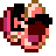

About Me
I'm into emulation, (tool-assisted-) speedruns, gaming, and tech projects.

EMULATION · TAS · GAMING · TECH
Welcome to my corner of the internet.
Find my socials, projects, and emulator tools below.
A growing collection of browser-based emulators and tools for TAS, RTA, and more. Play, practice, and explore!
Visit Emulator HubNES / SNESRTA & TAS Emulators
N64RTA & TAS Emulators
More projectsIn development
I'm into emulation, (tool-assisted-) speedruns, gaming, and tech projects.
PC hardware, Raspberry Pi projects, and experiments with gaming technology.
Follow my channels and Emulator Hub for new projects and progress.
Enjoying the projects? Check out my socials and share them with others.